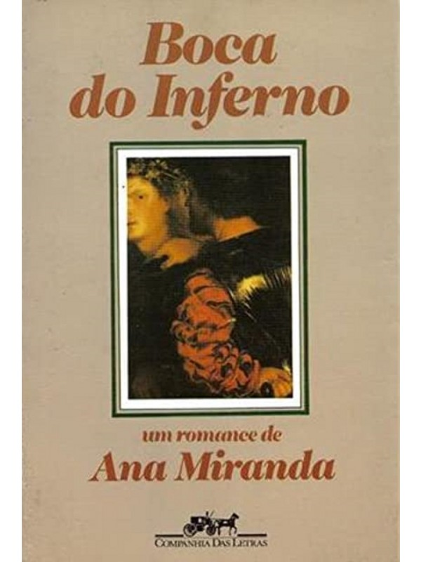
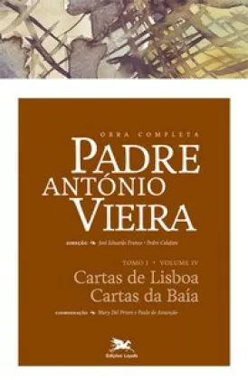

Barroco
O Barroco foi um movimento artístico e literário que se desenvolveu no século XVII, caracterizado pela tensão entre os valores do Renascimento e a espiritualidade do período colonial e contrarreformista. O estilo barroco reflete os conflitos da época, como a busca por equilíbrio entre o homem e Deus, corpo e alma, razão e fé.
Principais características do Barroco
1. Dualismo: Uma das marcas do Barroco é o confronto entre forças opostas, como pecado e perdão, corpo e alma, razão e emoção. Os autores barrocos expressavam a angústia e o conflito do homem dividido entre esses polos.
2. Linguagem Rebuscada: O estilo barroco é marcado pelo uso de uma linguagem rica em figuras de linguagem, como metáforas, antíteses, hipérboles e paradoxos. A intenção era gerar impacto e expressar a complexidade dos sentimentos humanos.
3. Religiosidade: A influência da Igreja Católica, especialmente com a Contrarreforma, era muito presente no Barroco. A literatura da época frequentemente abordava temas religiosos, exaltando a fé cristã e o poder de Deus.
4. Pessimismo e Contradições: Os autores barrocos expressavam uma visão pessimista da vida, marcada por incertezas e angústias. Havia uma constante reflexão sobre a fugacidade da vida, a efemeridade das conquistas materiais e o medo da morte.
Contexto histórico
O Barroco surge no século XVII, durante um período de grandes transformações na Europa, como a Contrarreforma, que fortaleceu a Igreja Católica em resposta ao Protestantismo. No Brasil, o Barroco se desenvolveu durante o período colonial, refletindo as tensões entre a cultura europeia e as realidades locais. A forte influência religiosa e a presença dos jesuítas são marcantes na produção barroca.
Obras e autores importantes
Gregório de Matos: "Boca do Inferno"
Padre António Vieira: "Cartas de Lisboa, Cartas da Baía"
Conclusão
O Barroco é um estilo que reflete as contradições de sua época, explorando a tensão entre o divino e o humano, a vida e a morte, o efêmero e o eterno. A complexidade das formas e a profundidade dos temas marcam essa fase importante da literatura brasileira e portuguesa, estabelecendo uma base para o desenvolvimento literário nos períodos subsequentes.
Autores como Gregório de Matos e Padre António Vieira se destacam no Barroco brasileiro, abordando temas religiosos e sociais de maneira intensa e estilisticamente elaborada.